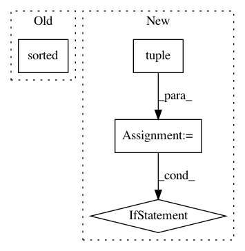

705a3dcb90454c2d6ab2a857ac0b88dff2ef0bab,src/python/pants/core/goals/lint.py,,lint,#Any#Any#Any#Any#Any#,134
Before Change
Get(LintResults, LintRequest, lint_request) for lint_request in valid_requests
)
sorted_results = sorted(itertools.chain.from_iterable(results), key=lambda res: res.linter_name)
if not sorted_results:
return Lint(exit_code=0)
linter_to_reports = defaultdict(list)
After Change
for field_set in request.field_sets
)
// We consolidate all results for each linter into a single `LintResults`.
all_results = tuple(
LintResults(
itertools.chain.from_iterable(
per_target_results.results for per_target_results in all_linter_results
),
linter_name=linter_name,
)
for linter_name, all_linter_results in itertools.groupby(
all_per_target_results, key=lambda results: results.linter_name
)
)
else:
all_results = await MultiGet(
Get(LintResults, LintRequest, lint_request) for lint_request in valid_requests
)
all_results = tuple(sorted(all_results, key=lambda results: results.linter_name))
reports = list(itertools.chain.from_iterable(results.reports for results in all_results))
if reports:
// TODO(/�): Tolerate when a linter has multiple reports.
linters_with_multiple_reports = [
results.linter_name for results in all_results if len(results.reports) > 1
]
if linters_with_multiple_reports:
if lint_subsystem.per_target_caching:
suggestion = "Try running without `--lint-per-target-caching` set."
else:
suggestion = (
"The linters likely partitioned the input targets, such as grouping by Python "
"interpreter compatibility. Try running on fewer targets or unset "
"`--lint-reports-dir`."
)
raise InvalidLinterReportsError(
"Multiple reports would have been written for these linters: "
f"{linters_with_multiple_reports}. The option `--lint-reports-dir` only works if "
f"each linter has a single result. {suggestion}"
)
merged_reports = await Get(Digest, MergeDigests(report.digest for report in reports))
workspace.write_digest(merged_reports)
logger.info(f"Wrote lint result files to {lint_subsystem.reports_dir}.")
exit_code = 0
if all_results:
console.print_stderr("")
for results in all_results:
if results.skipped:
sigil = console.yellow("-")
status = "skipped"
elif results.exit_code == 0:
sigil = console.green("✓")
status = "succeeded"
else:
sigil = console.red("𐄂")
status = "failed"
exit_code = results.exit_code
console.print_stderr(f"{sigil} {results.linter_name} {status}.")
return Lint(exit_code)
In pattern: SUPERPATTERN
Frequency: 3
Non-data size: 4
Instances
Project Name: pantsbuild/pants
Commit Name: 705a3dcb90454c2d6ab2a857ac0b88dff2ef0bab
Time: 2020-08-16
Author: 14852634+Eric-Arellano@users.noreply.github.com
File Name: src/python/pants/core/goals/lint.py
Class Name:
Method Name: lint
Project Name: uber/pyro
Commit Name: 3040d26d11096c12daf417cd46912bb30f5dafab
Time: 2020-04-21
Author: fehiepsi@gmail.com
File Name: pyro/ops/integrator.py
Class Name:
Method Name: _kinetic_grad
Project Name: pantsbuild/pants
Commit Name: b4eb76c08f9e613275f4b6bba4d32c8cc1224cdc
Time: 2021-03-23
Author: 14852634+Eric-Arellano@users.noreply.github.com
File Name: src/python/pants/backend/python/dependency_inference/rules.py
Class Name:
Method Name: infer_python_dependencies_via_imports